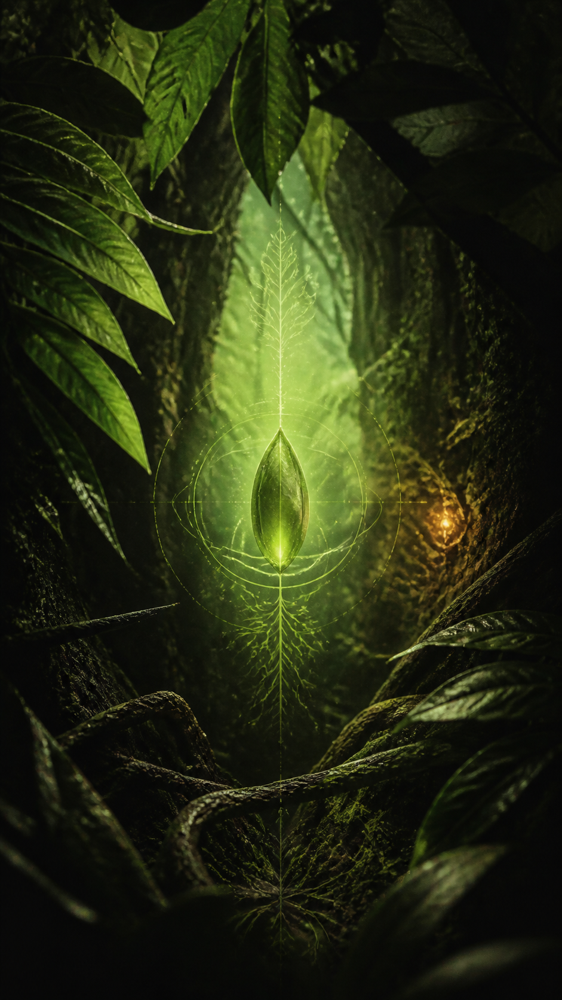
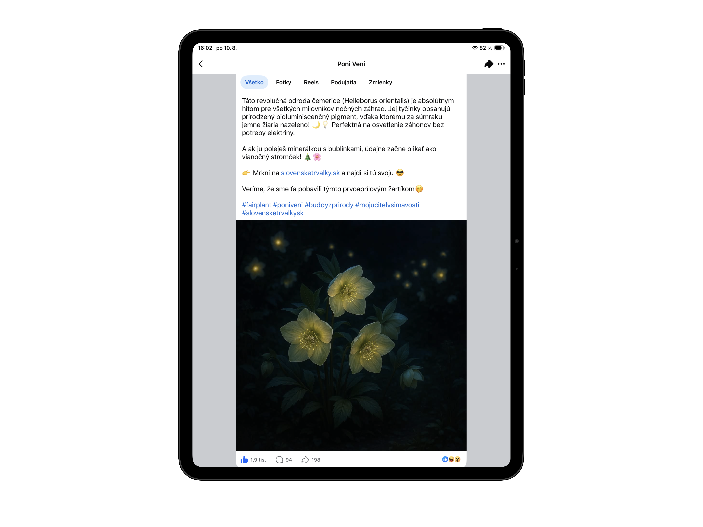
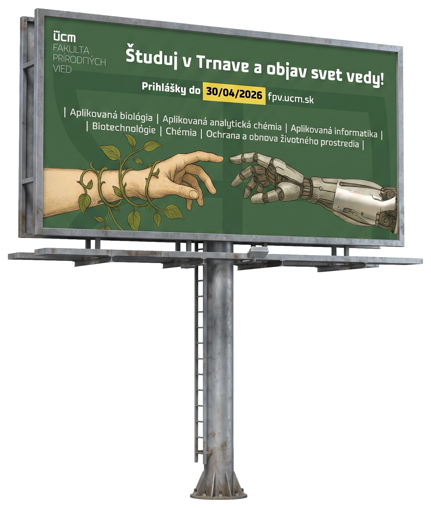
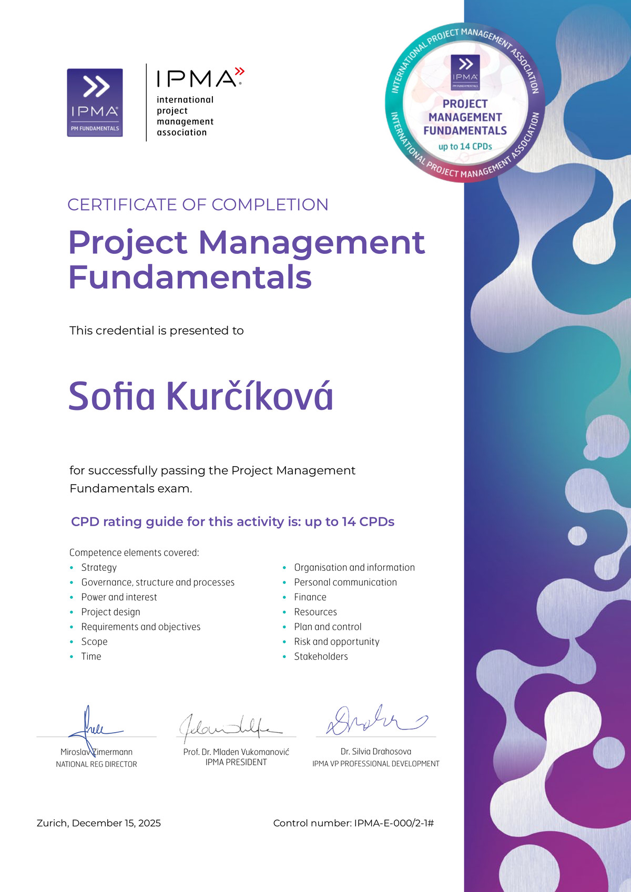
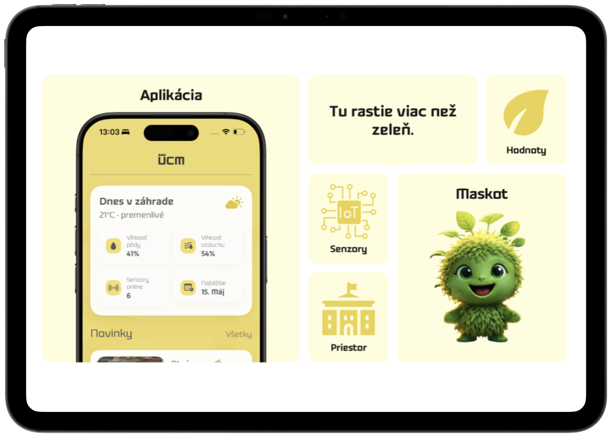

Sofia
Marketing Strategy / Project Direction
Prepájam stratégiu, kreatívu a dáta do marketingu, ktorý buduje značku a zároveň prináša výsledky.
Skills
Ability trace

ENTRY SIGNAL
Enter the
living system.
01 / BRIEF






Choose
entry
Select a category / Open a record
Make the first encounter feel like entry into a living world, then convert that atmosphere into a repeatable social signal.
Build recognition around one luminous botanical mark, then let crop, motion, and sound mutate while the core signal remains intact.
Poznámka: prácu si môžete prečítať na tomto odkaze.
Poznámka: prácu si môžete prečítať na tomto odkaze.
- Role
- Concept / direction
- Outputs
- Launch film, short-form assets, modular social system
- Impact
- A distinct world with a recognizable campaign memory structure
Profile mode.